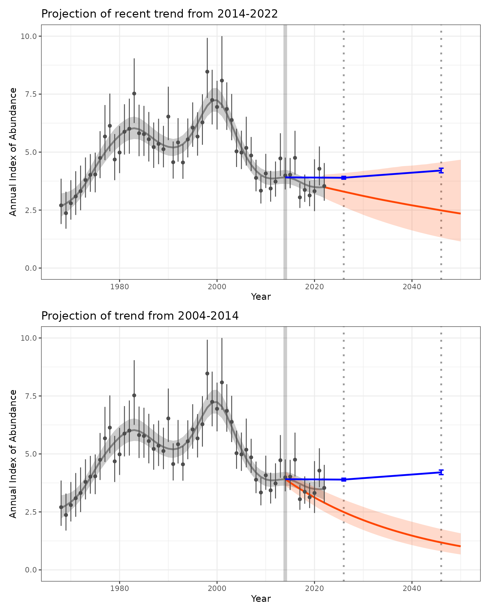
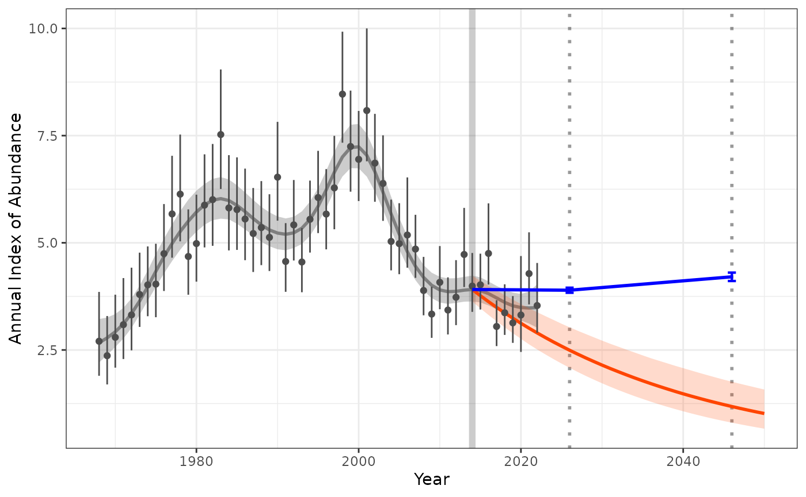

Comparing-trends-over-time
Source:vignettes/Comparing-trends-over-time.Rmd
Comparing-trends-over-time.Rmdwritten by Adam Smith
library(birdtrends)
library(ggplot2)
#library(patchwork)
library(mgcv)
#> Loading required package: nlme
#> This is mgcv 1.9-1. For overview type 'help("mgcv-package")'.
library(dplyr)
#>
#> Attaching package: 'dplyr'
#> The following object is masked from 'package:nlme':
#>
#> collapse
#> The following objects are masked from 'package:stats':
#>
#> filter, lag
#> The following objects are masked from 'package:base':
#>
#> intersect, setdiff, setequal, union
library(tidyr)
indat1 <- annual_indicies_data
fitted_data <- fit_hgam(indat1,
start_yr = NA,
end_yr = NA,
n_knots = NA)
#> `n_knots` is not defined, using default of one knot per 4 years of data using n_knots = 14.
#> Running MCMC with 4 parallel chains...
#>
#> Chain 1 finished in 2.0 seconds.
#> Chain 3 finished in 2.0 seconds.
#> Chain 2 finished in 2.1 seconds.
#> Chain 4 finished in 2.2 seconds.
#>
#> All 4 chains finished successfully.
#> Mean chain execution time: 2.1 seconds.
#> Total execution time: 2.4 seconds.
#> Warning: Dropping 'draws_df' class as required metadata was removed.
trend_short <- get_trend(fitted_data,
start_yr = 2014,
end_yr = 2022,
method = "gmean") %>%
rename(trend_short = perc_trend)
trend_previous <- get_trend(fitted_data,
start_yr = 2004,
end_yr = 2014,
method = "gmean")%>%
rename(trend_previous = perc_trend)
trend_dif <- trend_previous %>%
inner_join(trend_short, by = "draw") %>%
mutate(trend_difference = trend_short-trend_previous)
dif_trend <- round(quantile(trend_dif$trend_difference, c(0.05,0.5,0.95)),2)
dif_trend
#> 5% 50% 95%
#> 0.13 2.27 4.35
# project into the future
proj_trend_short <- proj_trend(fitted_data,
trend_short,
start_yr = 2023,
proj_yr = 2050)
#> hold tight, running the numbers!
#> ================================================================================
proj_trend_previous <- proj_trend(fitted_data,
trend_previous,
start_yr = 2015,
proj_yr = 2050)
#> hold tight, running the numbers!
#> ================================================================================
#Visualising the difference
index_baseline <- get_targets(model_indices = fitted_data,
ref_year = 2014,
st_year = 2026,
st_lu_target_pc = -2,
st_up_target_pc = 1,
lt_year = 2046,
lt_lu_target_pc = 5,
lt_up_target_pc = 10)
plot_target_short <- plot_trend(raw_indices = indat1,
model_indices = fitted_data,
pred_indices = proj_trend_short,
start_yr = 2014,
end_yr = 2022,
ref_yr = 2014,
targets = index_baseline) +
labs(title = "Projection of recent trend from 2014-2022")+
scale_y_continuous(limits = c(0,NA))
plot_target_previous <- plot_trend(raw_indices = indat1,
model_indices = fitted_data,
pred_indices = proj_trend_previous,
start_yr = 2004,
end_yr = 2014,
ref_yr = 2014,
targets = index_baseline) +
labs(title = "Projection of trend from 2004-2014") +
scale_y_continuous(limits = c(0,NA))
#print(plot_target_short / plot_target_previous)